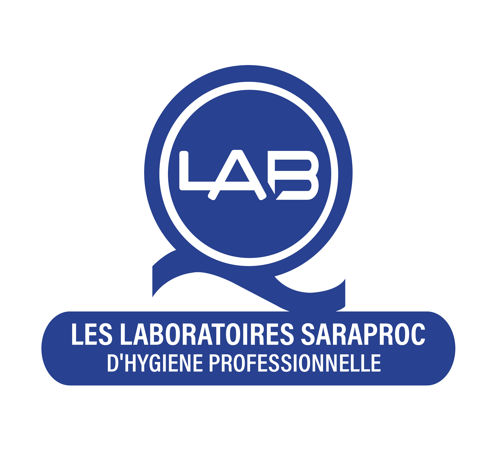
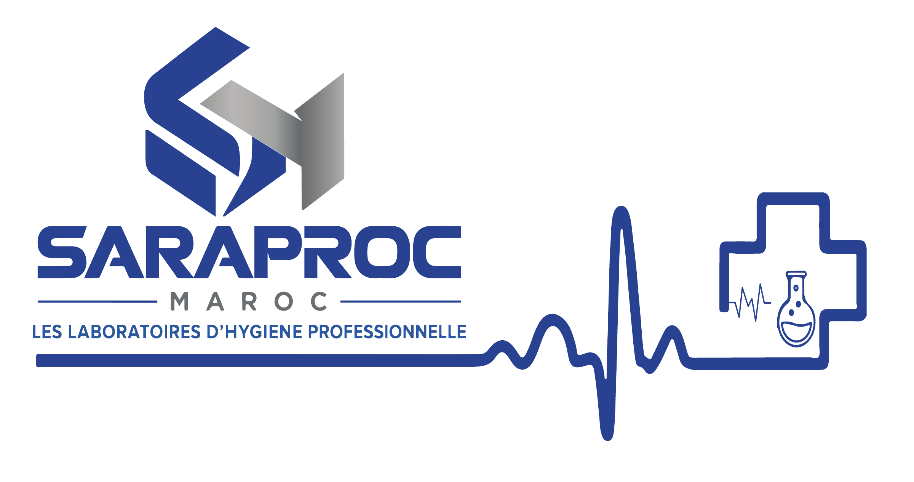
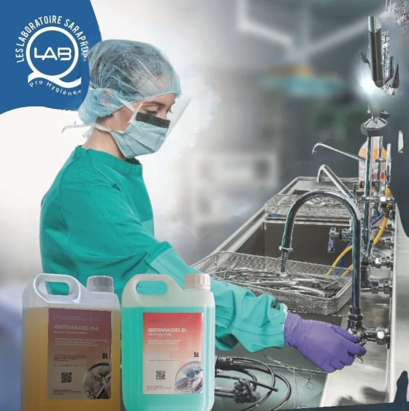
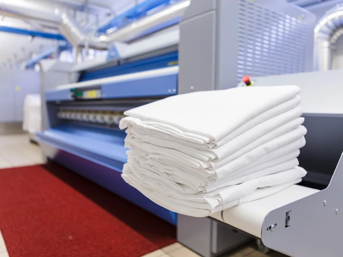
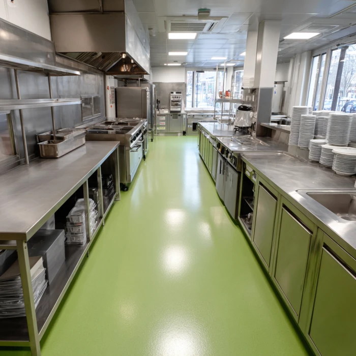
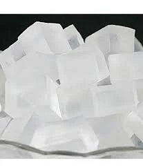

L’expertise au service des professionnels
L’hygiène, une exigence partagée.
SARAPROC MAROC

Notre histoire · Fès, Maroc
2002
Une expertise qui se développe.
Fondée à Fès, SARAPROC MAROC fabrique et distribue des solutions pour les professionnels.
Hygiène professionnelle et industrie
Traitement des eaux
Agriculture et élevage
Matières premières cosmétiques

Les laboratoires SARAPROC

02 — Hygiène médicale
Protéger les environnements de soin.
Hygiène des mains
Sols, surfaces et matériel médical
Désinfection par voie aérienne

Hygiène hospitalière
Des solutions pour chaque dispositif.
Instruments médico-chirurgicaux
Traitement des endoscopes
Gel de transmission ultrasonique
Générateurs d’hémodialyse et boucle d’eau
Les laboratoires SARAPROC
03 — Chimie industrielle
La chimie au service de l’industrie.
Matières premières, produits de base et intermédiaires.
Des applications sectorielles
Accompagner les procédés industriels.
Agroalimentaire
Textile
Cuir
Plastiques
Métaux
Peintures
Les laboratoires SARAPROC
Bâtiments & collectivités
Des espaces propres, chaque jour.
Sols et surfaces
Nettoyage et entretien du linge
Hygiène du personnel

Hygiène institutionnelle
Accompagner les lieux de vie.
Hôtels et établissements de santé
Écoles et administrations
Collectivités et espaces partagés
Les laboratoires SARAPROC
Traitement des eaux · installations
L’eau au cœur des procédés.
Eau de chaudière
Circuits de refroidissement
Systèmes d’osmose inverse
Traitement des eaux · applications
Des réponses pour chaque usage.
Traitement des eaux usées
Entretien de l’eau des piscines
Nettoyage des bassins
Les laboratoires SARAPROC
Bâtiments industriels
L’hygiène des espaces de production.
Sols, surfaces et matériel
Hygiène du personnel et des mains
Industrie de transformation agroalimentaire
Bâtiments d’élevage
La biosécurité au quotidien.
Surfaces et équipements d’élevage
Hygiène du personnel
Circuits d’eau d’abreuvage
Les laboratoires SARAPROC
Cuisines professionnelles
L’hygiène au service de la restauration.
Sols, surfaces et équipements
Lavage et rinçage de la vaisselle
Entretien des machines lave-vaisselle

Cuisines professionnelles · sécurité sanitaire
Des gestes aux aliments.
Hygiène du personnel
Produits pour l’hygiène des mains et des équipes.
Assainissement des végétaux
Traitement des fruits et légumes en cuisine professionnelle.
Les laboratoires SARAPROC
Matières premières cosmétiques
La matière de vos créations.
Huiles végétales, minérales et de silicone
Beurres cosmétiques
Cires naturelles et synthétiques
Alcools et acides gras
Formulation cosmétique
Texture, mousse et parfum.
Tensioactifs
Émulsifiants et co-émulsifiants
Épaississants
Parfums, fragrances et huiles essentielles
Matières premières cosmétiques
Actifs et finitions.
Colorants
Conservateurs
Antioxydants
Argiles et charbon actif
Vitamines
Microbilles et gommage
Les laboratoires SARAPROC
Bases cosmétiques
Le point de départ de vos formules.
Bases neutres et naturelles.
Pour la formulation de vos soins cosmétiques.

Bases cosmétiques
Savons et émulsions.
Savon glycériné — Melt & Pour
Émulsifiants et co-émulsifiants
Bases auto-émulsifiantes
Les laboratoires SARAPROC
10 / Traitement des eaux
L’eau, sous contrôle.
Maîtriser l’entartrage
Prévenir la corrosion
Lutter contre les biofilms
Prévention et correction
Préserver les installations.
Circuits hydrauliques
Eaux industrielles et de procédé
Entretien et traitement des piscines
Les laboratoires SARAPROC
11 / Compléments pour l’élevage
Accompagner la nutrition animale.
Des compléments pour les animaux d’élevage.

Animaux d’élevage
Quatre familles complémentaires.
Minéraux et oligo-éléments
Pour les besoins nutritionnels essentiels.
Vitamines
Pour accompagner le métabolisme.
Probiotiques et prébiotiques
Pour l’équilibre du microbiote intestinal.
Compléments énergétiques
Pour compléter les apports en énergie.
Les laboratoires SARAPROC
12 / Agriculture
Nourrir les plantes.
Engrais organiques et minéraux
Engrais organominéraux
Engrais foliaires liquides et hydrosolubles
Nutrition des plantes et fertilisation
Accompagner les cultures.
Biostimulants
Correcteurs de carence
Engrais phosphites
Amendements du sol
Dont amendements organiques.
Agriculture biologique
Des engrais dédiés.
Engrais hyposolubles
Les laboratoires SARAPROC
13 / Certifications, agréments et labels
Des engagements reconnus.
ISO 9001
ISO 13485
BPF Cosmétique
COSMOS Organic
ECOCERT Inputs
ONSSA
SARAPROC MAROC
saraprocmaroc.com